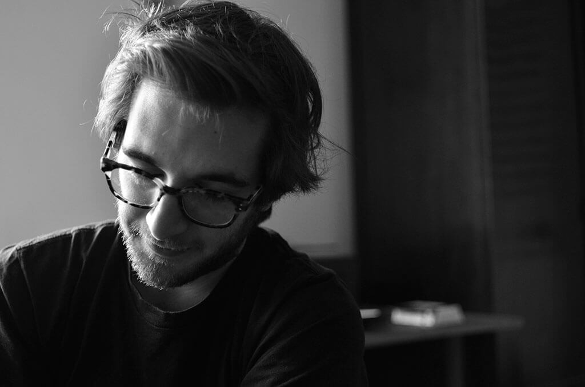

<main>
  <div class="center measure">
    <div class="pvxl phm mw666">
      <section class="flex-md flex-start">
        <h3 class="mtn mbxs f4 light flex-grownn flex-shrinkn flex-basis20-md">About</h3>
        <div class="mbxs mbm-md minw0">
          
        </div>
      </section>
      <section class="flex-md flex-start flex-end">
        <p class="w80-sm lh-title f4">
          My name Amin Al Hazwani, and I'm Berlin based product designer. I design apps, build websites, and teach Web and Media Design at the Free University of Bolzano (South Tyrol, Italy). I enjoy writing about design and I recently published an article on <a class="white" href="http://alistapart.com/article/motion-with-meaning-semantic-animation-in-interface-design">A List Apart</a> titled "Motion with Meaning: Semantic Animation in Interface Design".
        </p>
      </section>
      <section class="flex-md flex-start">
        <h3 class="mtn mbxs f4 light flex-grownn flex-shrinkn flex-basis20-md">Contacts</h3>
        <p class="lh-copy f4">
          E-mail: <a class="white" href="mailto:amin.alhazwani@gmail.com">{{ site.email }}</a><br>
          Twitter: <a class="white" href="https://twitter.com/aminalhazwani">{{ site.twitter }}</a><br>
          Instagram: <a class="white" href="https://www.instagram.com/aminalhazwani/">{{ site.instagram }}</a>
        </p>
      </section>
      <section class="flex-md flex-start">
        <h3 class="mtn mbxs f4 light flex-grownn flex-shrinkn flex-basis20-md">Credits</h3>
        <p class="w80-sm lh-copy f4">
          Prof. Kris Krois and Matteo Maria Moretti were the two supervisors of my thesis project Newsboy. I do not own the story “What is Code?”: Texts and pictures used in the screens are property of Bloomberg Business.
        </p>
      </section>
    </div>
  </div>
</main>